| [ Team LiB ] |
|
M16.2 PID ControllersConsider the continuous (analog) form of an ideal PID controller, 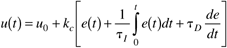 We use a constant sample time, Dt, and the index k to represent the value of the continuous time signal at discrete step k. For example, the error at discrete sample time k is equal to the continuous system value at time t = tk. 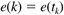 We approximate the integral term 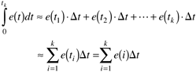 and the derivative term is approximated using backward finite differences: 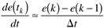 Substituting Equations (M16.2)–(M16.4) into Equation (M16.1), we find 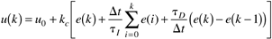 Notice that the manipulated variable action is calculated at discrete intervals. The most common way of implementing the discrete control actions on a continuous process is to assume a zero-order hold. A zero-order hold means that the control action is held constant between the sample times, and that the manipulated variable changes instantly at each sample time. Equation (M16.5) is known as the position form of the discrete PID controller equation. The "velocity form" can be found by subtracting the position form at step k - 1 from that at step k: 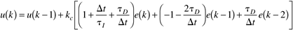 One of the major advantages to the velocity form of Equation (M16.6) is that it is naturally "antireset windup" (see Chapter 11 for a discussion of reset windup and procedures to prevent it). If the manipulated input saturates, the position form of Equation (M16.5) has an integral term that continues to accumulate, causing a potential windup problem. Most of the PID control system design techniques covered earlier in this text (direct synthesis, IMC-based PID, etc.) should yield successful tuning parameters for the discrete PID version, if the sample time is sufficiently small. Generally, the sample time should be 0.01 to 0.1 times the dominant time constant. In practice, most digital control loops are sampled several times per second, which is far more frequently than is actually needed for most process systems. Z-Transform Representation of PID ControlIn the same way that Laplace transforms are used to characterize continuous-time systems, Z-transforms are used to represent the input-output relationships for discrete-time systems. Consider the discrete PID algorithm in Equation (M16.6). This can be written as 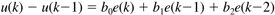 where 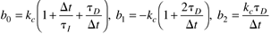 In an analogy to continuous-time systems, where we let u(s) represent the Laplace transform of u(t), we let u(z) represent the Z-transform of u(k). It is common to refer to z-1 as the backward shift operator: 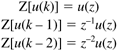 handling e(k), etc., similarly, we can write Equation (M16.7) as 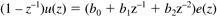 which can be written 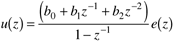 We can also multiply the numerator and denominator polynomials by z2/z2, to write 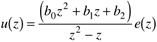 Note that we can view this as an input-output block 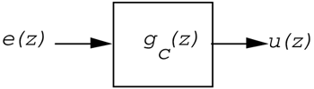 A discrete closed-loop block diagram is similar to that of a continuous block diagram. The closed-loop relationship for a setpoint change is 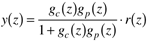 |
| [ Team LiB ] |
|